Book One
The Golden Ripe Mango
Some journeys are written. Some are remembered. His was never forgotten.
Myth · Destiny · Astra · Friendship · Sacrifice
The well remembers those it calls.
SWASTIKASTRA
Ten Elements · One Destiny
A boy. A temple. A voice.
A world beyond imagination.
A destiny beyond time.
Some journeys are written. Some are remembered. His was never forgotten.
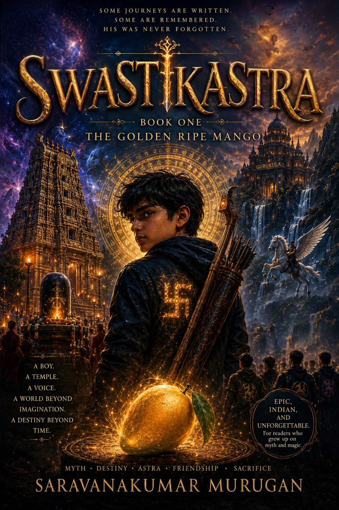
Some destinies are chosen. His was carved into his skin before he ever drew his first breath.
Thirteen-year-old Sid was an ordinary boy from Chennai — until a temple visit, a voice only he could hear, and a hidden well swallowed his old life whole. What waits on the other side is the Gurukula: an ancient school hidden from the mortal world, where children learn to wield astras — living weapons drawn from myth, fire, water, sound, and shadow — and where a war twelve years in the making has been quietly, patiently waiting for him to grow up.
Sid doesn't know why the mark on his hand glows gold. He doesn't know why an eleven-headed thing called DRAGON once crossed into the mortal world just to find his mother. He doesn't know that across five years of friendship, rivalry, first love, and impossible power, he will become the only weapon capable of ending a war that started before he was born.
All he knows is that House Dravidians needs an archer. And that the mango tree in his own school's courtyard has been waiting for him far longer than he's been alive.
Will Sid master the astra only he was ever meant to wield?
Can a boy raised on cricket scores and temple prayers really be the one prophecy pointed to?
And when the Red Moon finally rises — will love be strong enough to finish what a mother's protection started?
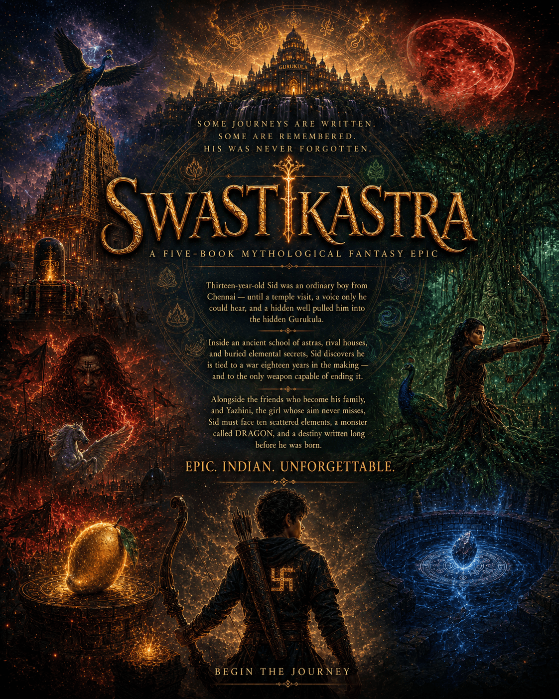
Six years at the Gurukula, across five books. Move along the years to follow him.
Some journeys are written. Some are remembered. His was never forgotten.
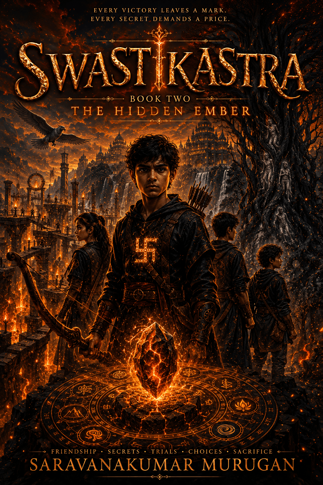
Every victory leaves a mark. Every secret demands a price.
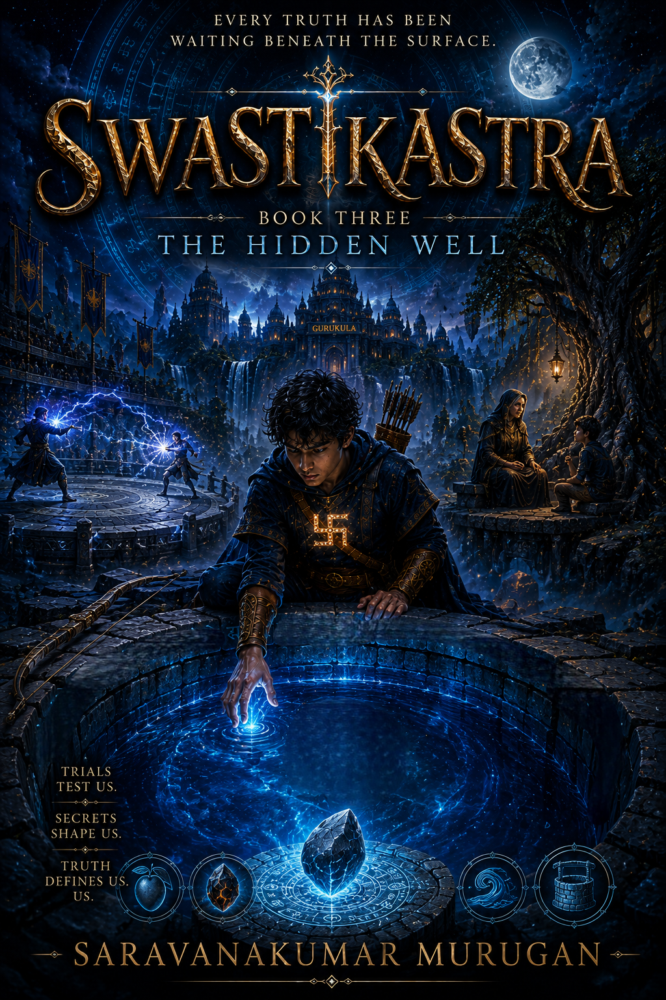
Every truth has been waiting beneath the surface.
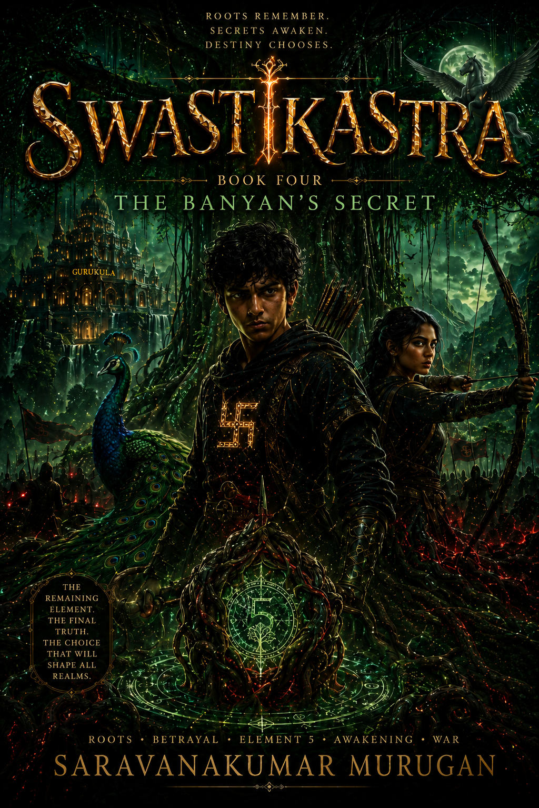
Roots remember. Secrets awaken. Destiny chooses.
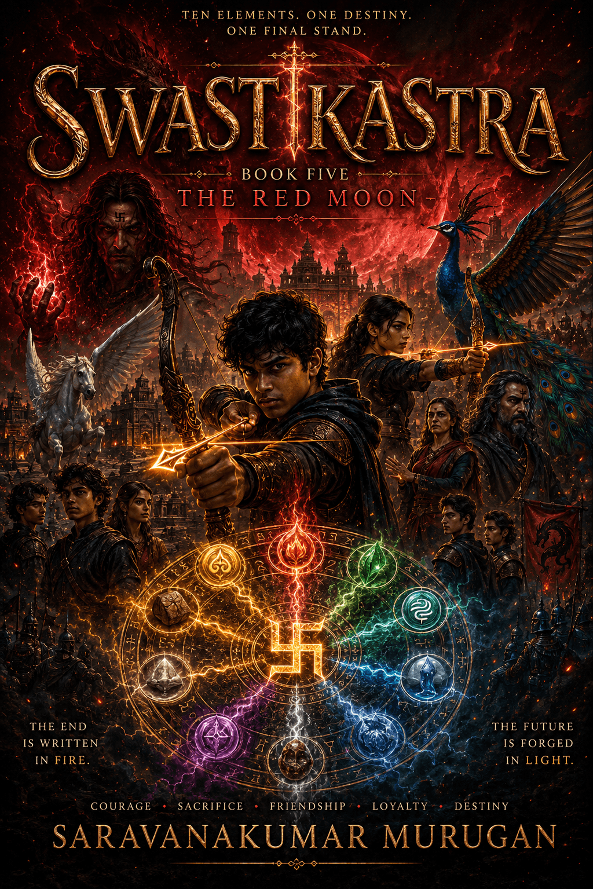
Ten elements. One destiny. One final stand.
Twelve years ago something broke apart on this ground and hid ten pieces of itself where no one would think to look. Only one has been found. Pass over the others and they will tell you a little — never enough.
Every student at the Gurukula belongs to one of three houses, sealed behind a Kaaval Mudra only their warden and student leader can open.
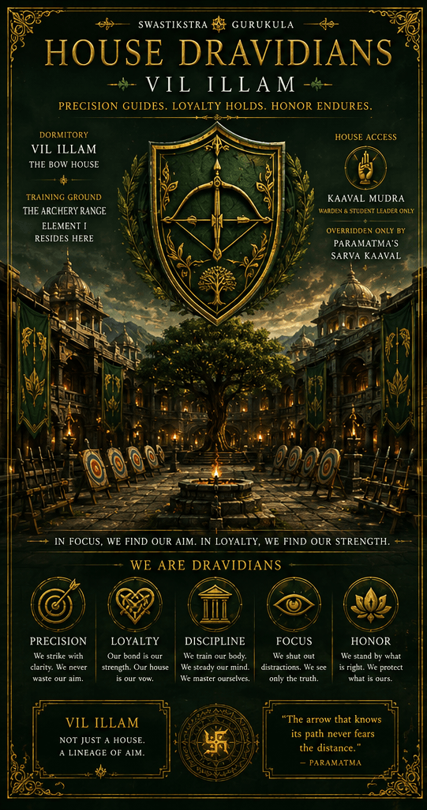
Precision guides. Loyalty holds. Honour endures.
“The arrow that knows its path never fears the distance.”Paramatma
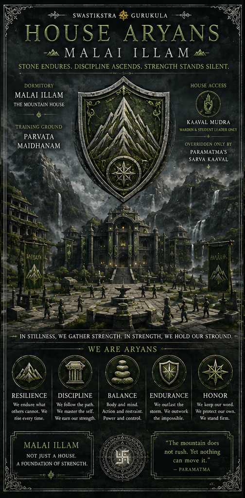
Stone endures. Discipline ascends. Strength stands silent.
“The mountain does not rush. Yet nothing can move it.”Paramatma
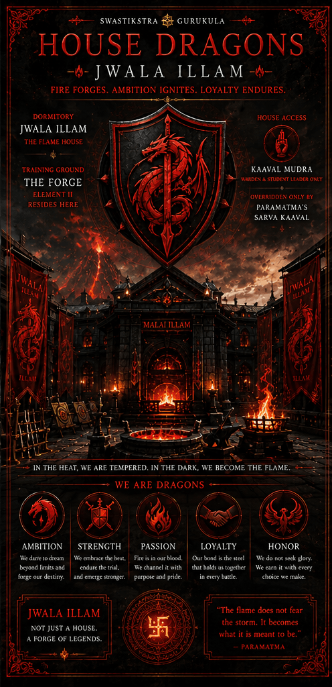
Fire forges. Ambition ignites. Loyalty endures.
“The flame does not fear the storm. It becomes what it is meant to be.”Paramatma
Except this one. Pass over a marker to see what stands there.
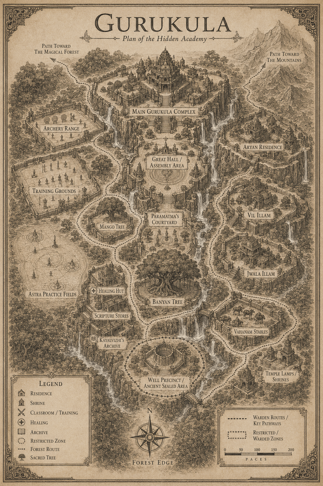
Scroll to clear the cloud cover. Pass over a marker to see what stands there.
Thirty-one astras are taught at the Gurukula across five tiers. These five are the foundation — what a first-year learns before anything else.
Armour of light. The first thing you learn, because the second thing you learn will try to hurt you.
The forest answers. Roots take an opponent's legs out from under them before they know they have moved.
Sleep, delivered from sixty paces. Merciful in the right hands. Not everyone has the right hands.
Fire. House Dragons' favourite, and the one the safety rules were written for.
Water, and the natural answer to fire. It also douses flames that have no business still burning.
Above the foundation tier sit the elemental, combat and high tiers — and above all of them, one astra that appears on no syllabus and can be wielded by exactly one person. Twenty-six more astras, five seals, and the weapon the series is named for are catalogued in the Codex.
The Codex — coming to the Reader's CircleBonded once, in a forest, at thirteen. The bond does not transfer and it does not end.
A winged horse who flies further than any other in his year — and does something in water that no one expects a horse to be able to do at all. There is a mark under his forelock that answers to the mark on Sid's hand.
What he can actually do is shown properly in Book Two.
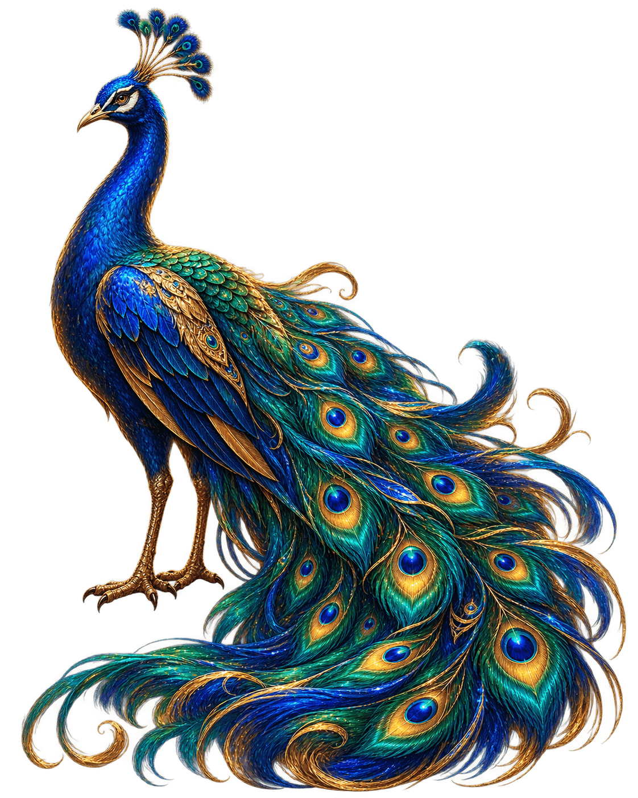
Sacred to Murugan, and the right companion for an archer who can strike a bell at sixty paces blindfolded. Sound carries differently when you are riding something that hears it first.
What that turns out to be worth is a question the last book answers.
Tap any card to turn it over.
Release dates, cover reveals, and the first chapters — sent to the people on this list before anywhere else. No more than a handful of emails a year.
Placeholder form. Replace SWASTIKASTRA_FORM_ID and the three entry IDs with the live Google Form values.
| Book | Year | Words |
|---|---|---|
| I · The Golden Ripe Mango | Age 13 | 51,170 |
| II · The Hidden Ember | Age 14–15 | 46,228 |
| III · The Hidden Well | Age 15–16 | 47,335 |
| IV · The Banyan's Secret | Age 17–18 | 50,228 |
| V · The Red Moon | Age 19 | 63,299 |
| Complete series | Age 13–19 | 258,260 |